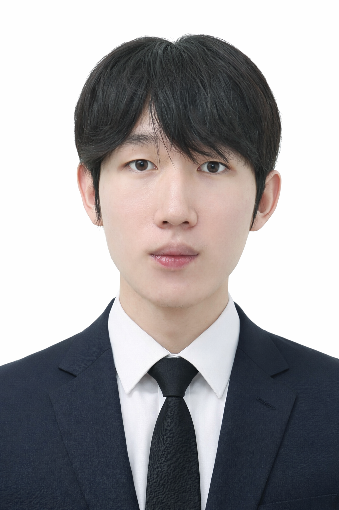
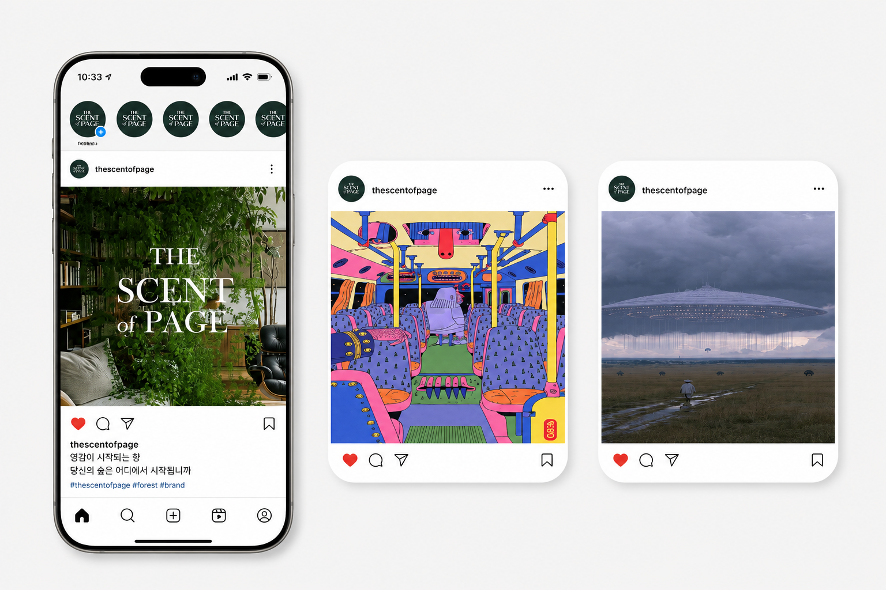

이태현
타깃을 읽고,
관습을 벗어난 크리에이티브로,
결과로 증명합니다.
관찰과 분석을 토대로, 허용된 범위 내에서 적절한 크리에이티브를 펼칩니다
직접 만드는 마케터는
가설 검증이 빠릅니다.
크리에이티브 기획·제작
소재·텍스트·이미지·영상을 직접 만듭니다. 기획과 제작 사이의 손실이 없습니다.
데이터·전략적 사고
타깃 분석에서 인사이트를 꺼내고, 인사이트를 전략으로 옮깁니다.
AI 활용 역량
AI로 크리에이티브 생산 속도를 바꿉니다.
도전적인 성향으로 변화의 선두에 섭니다.
AI 6종을 직접 견주고,
워크플로우에 이식했습니다.
단순한 사용 경험이 아니라 선별과 설계의 경험입니다.
완성된 파이프라인은 빠르고도 효율적입니다 — 1일 완성.
2024년 당시 AI 영상의 병목은 퀄리티가 아닌 일관성과 인식률 — ai 제작이 어느정도 티 나는 것은 당연한 시절. 관건은 오류를 얼마나 줄이느냐.
당시 시장의 생성형 AI 6종을 직접 비교 테스트 — Kling · Sora · Leonardo · GPT 이미지 등. '가장 유명한 툴'이 아니라, 일관성과 인식률이라는 이 프로젝트의 기준을 통과한 툴만 채택했습니다.
선별한 툴로 4단계 파이프라인을 설계했습니다. Ai를 통해 자동화되고 신속한 제작 작업, 이외의 전체적인 설계는 직접.
2024년, 기술은 완성돼 있지 않았습니다. 이미지 인식률이 낮아 영상화 완성도가 떨어지자, 콘티 방향 자체를 수정해 인식이 가장 잘 되는 시안으로 재설계했습니다. 툴의 한계에서 멈추지 않고, 결과를 기준으로 콘티와 툴을 함께 조정하는 것 — 제가 AI를 다루는 방식입니다.
"왜 캔에 든 우유는 없을까?" — 질문 하나에서 출발한 기획. ChatGPT와 브레인스토밍하되, 최종 스토리라인은 직접 제작.
당시 가장 강력한 캐릭터 일관성(--sref)과 압도적인 퀄리티가 채택 이유. 프롬프트는 초안만 AI, 수정은 직접.
최고 수준의 이미지 인식률 + 무제한 생성이 채택 이유 — 260회를 실험하며 최고 퀄리티 소스만 추출.
최종 완성도를 좌우하는 마무리 작업 — 사운드, 효과음 소스 직접 서칭, 편집에도 Ai를 효율적으로 사용하되 마무리는 사람이.
이 사례를 대표로 꼽은 이유는,
경험이 0일 때 워크플로우를 처음부터 만들었기 때문입니다.
AI 경험이 전무하던 시점에 6종을 직접 테스트·선별해 파이프라인을 처음부터 설계했습니다. 툴을 배운 경험이 아니라, 낯선 도구를 검증해 내 워크플로우로 만드는 방법을 증명한 사례입니다.
같은 방법으로 지금까지 신규 AI를 꾸준히 테스트하며 파이프라인을 갱신해 왔습니다 — Freepik · Hailuo · Higgsfield 등. 영상 제작을 넘어 업무 자체의 효율을 높일 지점을 찾아 AI를 붙이는 일을 계속하고 있습니다.
제작 3.5시간, 최우수상.
미리캔버스가 자사 사용자를 대상으로 주최한 1,500만원 규모의 광고 포스터 제작 공모전. 창의력을 발휘한 소재로 미리캔버스 이용자 저변을 넓히는 것이 목표였고, 수상작은 강남역 광고 게시판에 실제 개재됩니다.
주최사 의도와 심사 우선순위를 먼저 예측했습니다. 공모전은 결국 주최사가 보여주고 싶은 것을 대신 만들어 주는 일이라는 판단.
AI 기능이 갓 출시된 시점 — 그 기능을 직접 써서 만든 포스터가 심사에 유리할 것.
수상작은 강남역에 개재된다는 점을 역활용. 청록×주황 색조합으로 심심하지 않으며 눈에 띄는 디자인 제작.
가설은 리서치로 확정하고, 손끝으로 검증했습니다.
가설을 세우는 데서 멈추지 않았습니다. 미리캔버스 광고 대전의 이전 수상 사례들을 직접 서칭하고, 어떤 결이 반복적으로 뽑히는지 분석했습니다. 그 패턴으로 ‘주최사가 보여주고 싶은 것’이라는 가설을 데이터로 확고히 했습니다.
무작정 디자인에 들어가지 않았습니다. 미리캔버스 앱의 신규 AI 기능을 실제로 사용해 플로우를 직접 경험한 뒤, 빠르게 이해시키되 실제 사용경험과 유사한 디자인으로 밸런스를 조율해 시각화했습니다. 사용자들이 실제로 사용해보았을 때, 이질감이 안 느껴지도록.


4년 · 14편, 한 팀에서
모든 역할을 해봤습니다.
영상 제작 동아리 블루스크린에서 4년간 단편영화·숏폼·예능·다큐 14편 제작에 참여했습니다. 작품 안에서는 총감독·편집·스토리기획·카메라·미술팀장까지 역할을 오갔고, 밖에서는 3년간 총무와 공식 인스타그램 운영을 맡아 팀이 굴러가게 했습니다.
여러 규모의 팀에서 역할을 나누고 의견을 조율하며 하나의 결과물로 수렴시키는 과정을 반복했습니다. 서로 다른 포지션을 직접 겪어봤기에, 각 파트가 무엇을 필요로 하는지 알고 소통합니다.
‘봉을 아십니까?’
시청자가 완성하는 23분.
유튜브 추천영상 기능을 분기 장치로 뒤집어, 시청자의 선택에 따라 결말이 갈라지는 인터랙티브 단편을 설계했습니다. 저는 이 작품의 크리에이티브 담당으로, 관습을 벗어난 포맷을 설계하고 만드는 데 핵심 역할을 맡았습니다.
다양한 활동에 참여하면서 촬영에 필요한 역량을 고르게 키웠습니다. 그중에서도 모든 촬영의 근간이 되는 체력과 멘탈이, 자신만의 루틴을 찾아가며 가장 많이 성장했습니다.
분기점(A–F)을 누르면 그 선택에서 도달 가능한 결말이 강조됩니다. 다시 누르면 전체 보기.
수요에 맞춘 숏폼, 두 번의 심사로 검증.
플랫폼과 심사 기준을 먼저 읽고, 그에 맞는 소재를 빠르게 기획해 퀄리티로 완성합니다. 조회수가 아니라 심사라는 기준을 통과한 성과입니다.
2인 팀의 총감독 겸 편집으로 30초 안에 메시지를 압축한 숏폼. 기획부터 완성까지 주도했습니다.
영상 자리
심사 기준을 역산해 소재를 설계한 숏폼. 8인 팀의 편집을 맡아 완성도를 책임졌습니다.
영상 자리
공식 인스타그램, 3년의 풀사이클.
계정 관리인으로서 크리에이티브 이미지를 직접 제작해 게시하고, 무엇을 올릴지 지속적으로 고민했습니다. 부원들이 만든 콘텐츠는 검수를 거쳐 올리며 정보의 정확성을 책임졌습니다.
- 정보 전달형 — 동아리 이벤트·리크루팅 안내
- 제작 비하인드 아카이브
- 영상 제작 초보를 위한 팁 (직접 기획·제작)
부원들이 제작한 콘텐츠를 받아 문안·정보를 검수한 뒤 게시하는 과정을 3년간 반복했습니다. 계정의 정보 정확성은 제 책임이었습니다.
데이터로 문제를 규정하고,
인사이트로 포지션을 다시 세웁니다.
시장 데이터에서 문제를 읽고, 관습을 뒤집는 인사이트로 브랜드의 자리를 재정의한 전략 프로젝트입니다.
THE SCENT of PAGE
교보문고 마케팅팀의 실제 브리프. 리브랜딩이 계획된 제품에 의미를 붙여 마케팅 전략을 세웠습니다.
2019→2025(E). 불황에도 향은 계속 팔린다 — 시장 자체가 커지는 중.
'나를 표현하는 수단'이 화장에서 향으로. 개성 소비의 중심 품목이 됐다.
니치향수의 인기 요인은 향 자체보다 조향사의 세계관과 서사. 이야기 없는 향은 방향제로 남는다.
숲의 향은 좋은 속성이지만, 그 자체로는 이야기가 아니다. 감각을 끌어올리고 추가적인 상상을 이끌어내는 한 문구가 필요하다고 판단했다.
‘향’은 상수, 의미는 변수. 회사가 준 속성은 그대로 두고, 그 앞에 붙는 의미만 새로 설계했다. 이 캠페인의 핵심 단어를 설정한 뒤, 마케팅 전략을 통해 이를 뒷바침 한다.
시장의 약 90%를 차지하는 가격대. 경쟁 시장을 재설정한다.
프리미엄을 사기엔 부담스러운 대학생·사회초년생의 첫 공간 향 — 빈자리는 여기다.
가격과 판매 접점(서점)을 고려하면 이 브랜드의 싸움터는 프리미엄이 아니다.
향에 막 입문하는 세대를 끌어낼 전략이 필요했다.
타깃(대학생·초년생)에게 효과적인 광고 방식으로 떠오른 UGC광고 방식을 채택.
브랜드가 말하는 대신, 창작자가 증명하게 했다.
향은 설명할 수 없다. 그래서 설명하지 않고, 증명하게 했다.
직접 만드는 대신, 광고를 만들 사람을 부른다. 영상·미술·시나리오, 등 장르. 수상자에게 상금 및 특별 에디션 증정.
창의력과 영감을 심사 기준으로, 브랜딩에 도움이 되는 수상작을 선정하며 이를 통해 브랜드를 구축해간다
브랜드는 액자를 제공, 창작자들의 실력을 뽑낼 수 있는 창작마당이 되어 잠재 고객들에게 다가간다.
"영감을 준다"고 말하지 않는다. 영감받은 결과물이 쌓인 화면이 대신 말한다.
팔로워 161명.
현재 조용한 계정의 활약이 시작된다.
공식 인스타그램의 현재 규모로는 브랜드가 소재를 올려도 타깃에게 닿지 않습니다. 공모전 전략은 이 계정을 바꿉니다 — 참여자 한 명이 곧 팔로워·콘텐츠·공유자가 되고, 창작하는 대학생·사회초년생이라는 타깃이 스스로 모여드는 채널이 됩니다. 광고비 없이 타깃 정중앙에 도달하는 인스타 마케팅입니다.
SCENT
of PAGE
수상작이 곧 피드가 됩니다.
계정은 창작자의 마당이 됩니다.
공모전 수상작은 THE SCENT of PAGE 공식 인스타그램에 게시됩니다. 브랜드가 소재를 만드는 대신 창작자의 작품이 피드를 채우고, 계정 자체가 창작자들이 모이는 마당으로 굴러갑니다 — 게시 한 번이 곧 간접 홍보입니다.

창작의 공간에서
돌연 숲이 전개됩니다
창작의 공간 속에서 돌연히 풀숲이 전개되며, 마치 숲의 향이 코끝에 닿을 듯한 감각을 선사합니다.
당시 생성형 AI로 직접 제작한 브랜드 필름 시안 2편입니다.
크리에이티브를 무작정 펼치지 않습니다.
주어진 틀 안에서 가장 효과적으로 펼칩니다.